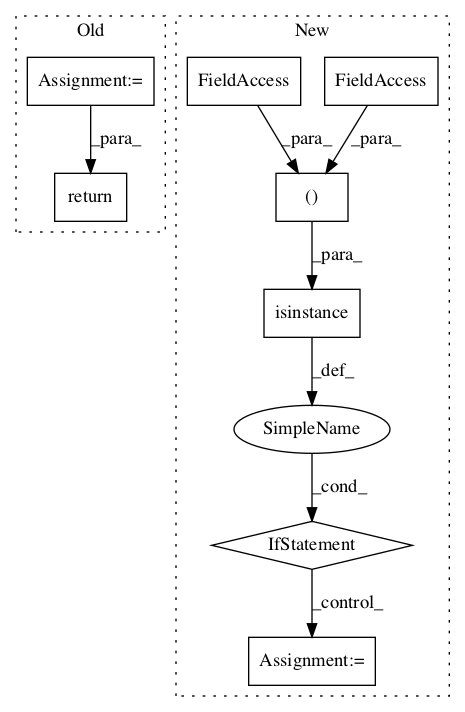

b71152eea0470ac2629c33e0fc66a54fe494949f,baselines/common/vec_env/dummy_vec_env.py,DummyVecEnv,step_wait,#DummyVecEnv#,15

Before Change
obs[i] = self.envs[i].reset()
self.ts[i] = 0
self.actions = None
return np.array(obs), np.array(rews), np.array(dones), infos
def reset(self):
results = [env.reset() for env in self.envs]
return np.array(results)
After Change
def step_wait(self):
for i in range(self.num_envs):
obs_tuple, self.buf_rews[i], self.buf_dones[i], self.buf_infos[i] = self.envs[i].step(self.actions[i])
if isinstance(obs_tuple, (tuple, list)):
for t,x in enumerate(obs_tuple):
self.buf_obs[t][i] = x
else:
self.buf_obs[0][i] = obs_tuple
return self.buf_obs, self.buf_rews, self.buf_dones, self.buf_infos
def reset(self):
for i in range(self.num_envs):
In pattern: SUPERPATTERN
Frequency: 3
Non-data size: 8
Instances
Project Name: openai/baselines
Commit Name: b71152eea0470ac2629c33e0fc66a54fe494949f
Time:
Author: null
File Name: baselines/common/vec_env/dummy_vec_env.py
Class Name: DummyVecEnv
Method Name: step_wait
Project Name: NifTK/NiftyNet
Commit Name: f360de0fa4454122d665b9c32f4d5911a4ebec0c
Time:
Author: null
File Name: niftynet/layer/loss.py
Class Name: LossFunction
Method Name: layer_op
Project Name: openai/baselines
Commit Name: b71152eea0470ac2629c33e0fc66a54fe494949f
Time:
Author: null
File Name: baselines/common/vec_env/dummy_vec_env.py
Class Name: DummyVecEnv
Method Name: reset